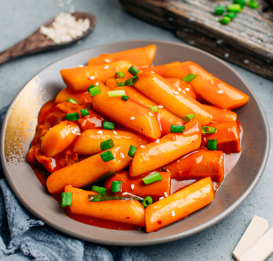
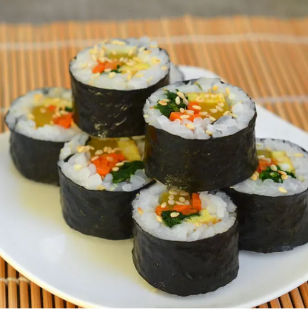
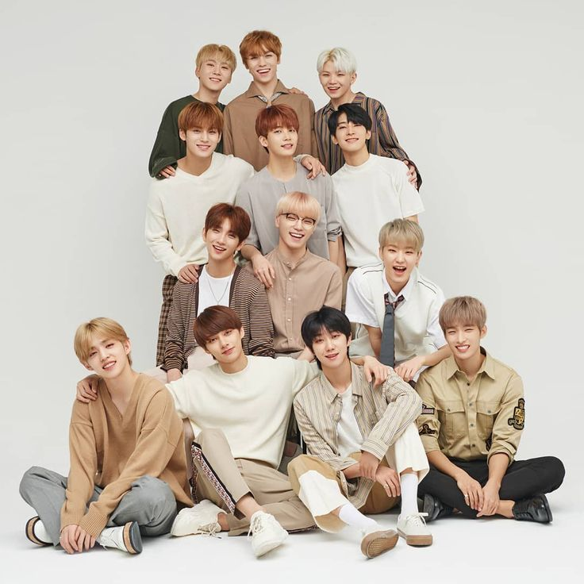
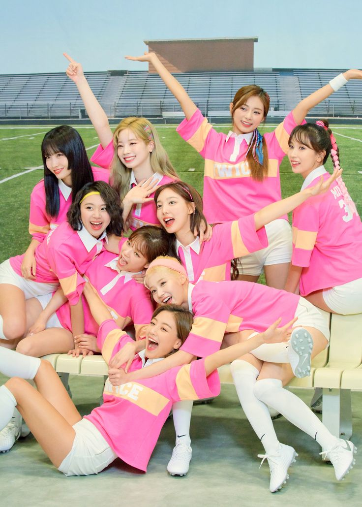

Changdeokgung Palace
The second most popular palace in Seoul.It offers a beautiful natural scenery.
Jongmyo Shrine
Jongmyo shrine houses the “spirit tablets” of Joseon kings and queens.
It preserves the spirits of the Joseon Kings and Queens who reigned on the country

Haedong Yonggungsa Temple
It is a unique temple located in north-east Busan. It was built by a Buddhist teacher,Naong.
It houses Buddhist treasures such as the Statue of the Great Goddess Buddha of Mercy in the Sea,
Daeungjeon Sanctuary, Yongwangdang Shrine, and a three-story pagoda with four lions symbolizing
joy, anger, sadness and happiness, all of them looking out over the sea

Bulguksa Temple
IT is a Buddhist temple on Tohamsan,South Korea. The temple is considered as a masterpiece of
the golden age of Buddhist art in the Silla kingdom.
Namsan Tower
It marks the highest point in Seoul and allows you to view the entire city and the beautiful surrounding areas.
Seoraksan National Park
It is a national park in South Korea.It was also the first Korean national park to be named under the National Park Law in 1970.t is home to many rare taxa of flora and fauna.
Gyeongju
Gyeongju is a cultural and historical treasure gem.The temple was built in the 8th century and serves as a gathering place for both archaeologists and believers of Buddhism.
Hangang Park
It is a park that consists of 12 parks in Seoul, South Korea.It consists of Gwangnaru Park, Jamsil Park, Ttukseom Park, Jamwon Park, Ichon Park, Banpo Park, Mangwon Park, Yeouido Park, Nanji Park, Gangseo Park, Yanghwa Park, and Seonyudo Park.
There are many of sports facilities,many swimming pools and water-related sports.
Kimchi
Kimchi is the soul food in Korea,national dish.Kimchi consists of Korean cabbage,
radish, pumpkin, onion, ginger, and scallion with chili powder, crushed garlic and salted seafood,
which is then left to ferment.
Bibimbap
Bibimbap is one of the most well known Korean dishes.
It consists of warm rice topped with mixed vegetables, beef or chicken, and raw egg,
as well as soy sauce and a dollop of chilli pepper paste for seasoning

Tteokbokki
Tteokbokki is a traditional Korean street food that's made with thick slices of garaetteok (boiled rice cake),
fish cake, onions, diced garlic, salt, sugar and assorted vegetables that are stir-fried in sweet red chili sauce

Gimbap
It is a Korean dish made from cooked rice, vegetables, fish, and meat rolled in
gim dried sheets of seaweed and served in bite-sized slices
Jajangmyeon
A Korean-Chinese fusion dish. It consists of thick handmade wheat noodles topped with raw cucumber slices and a mixture of salty black soybean paste, diced pork and vegetables.
Japchae
This is stir-fried noodle dish made with sweet potato noodles, vegetables, and sometimes meat.
K-pop ,Korean popular music as it is commonly known, is a South Korean musical genre that has become extremely well-known worldwide. Along with traditional Korean music, it features a broad variety of styles and genres, such as pop, hip hop, R&B, rock, jazz, gospel, reggae, electronic dance, folk, country, disco, and classical. In the 2000s, the phrase "K-pop" gained widespread recognition.

Bangtan Boys (BTS)
BTS is a South Korean boy band formed in 2010 by Big Hit Entertainment. The group consists of seven members

Stray kids
Stray Kids is a South Korean boy band formed by JYP Entertainment through a 2017 reality show of the same name.
The group consists of eight members
EXO
EXO is a South Korean-Chinese boy band formed in 2011 by SM Entertainment.The group initially consisted of twelve members,
but due to legal issues and departures, the group now consists of nine members:

BlackPink
Blackpink is a South Korean girl group formed by YG Entertainment, consisting of four members Jisoo, Jennie, Rosé, and Lisa

Seventeen
Seventeen is a South Korean boy band formed by Pledis Entertainment, consisting of thirteen members: S.Coups, Jeonghan, Joshua, Jun, Hoshi, Wonwoo, Woozi, DK, Mingyu, The8, Seungkwan, Vernon, and Dino

Twice
Twice is a South Korean girl group formed by JYP Entertainment, consisting of nine members: Nayeon, Jeongyeon, Momo, Sana, Jihyo, Mina, Dahyun, Chaeyoung, and Tzuyu